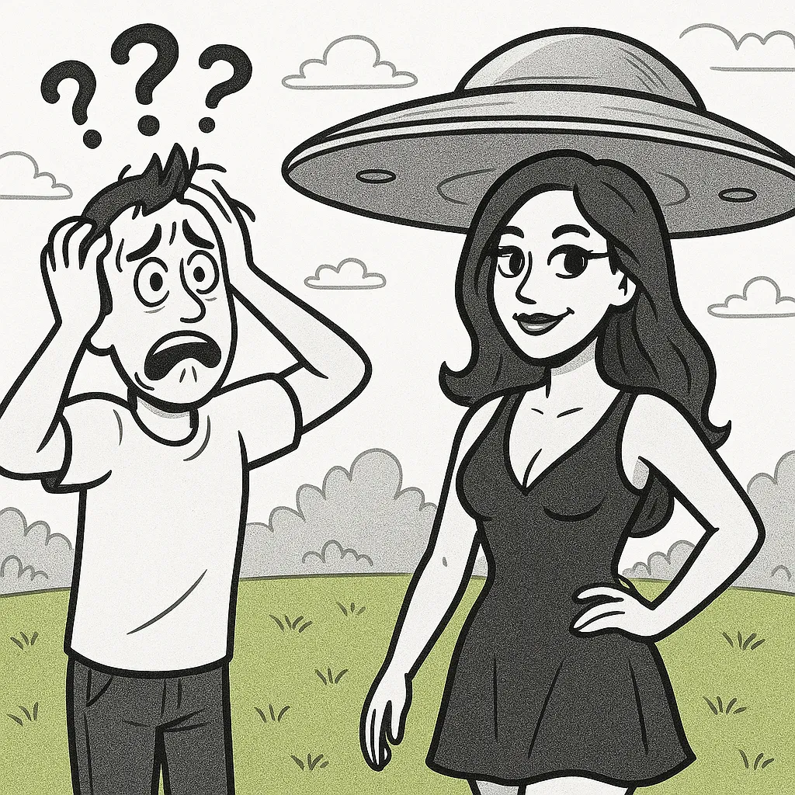
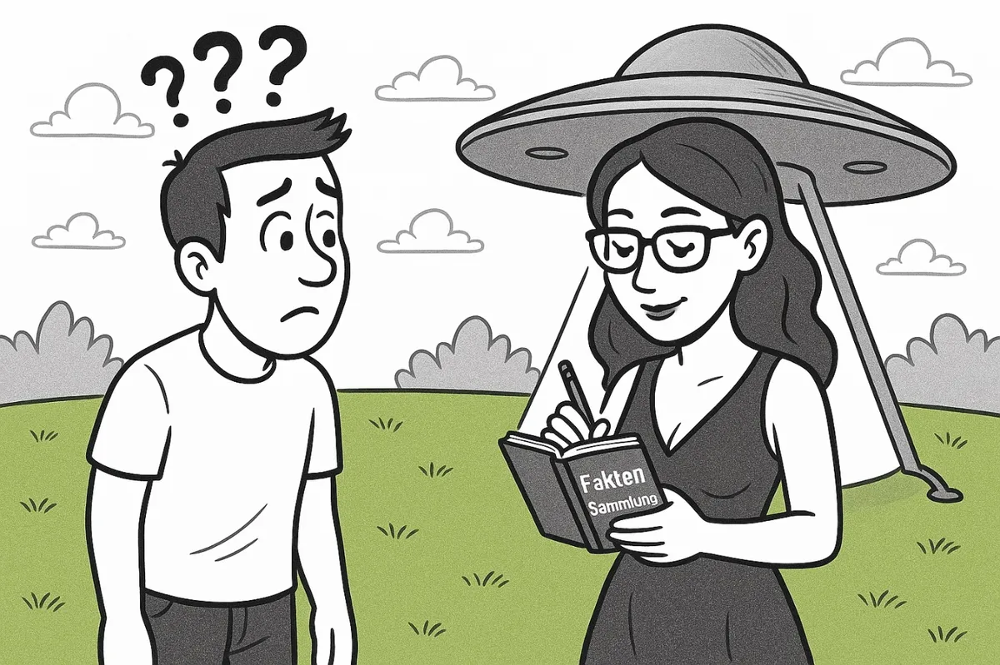

Diese Website verwendet Cookies. Das Ablehnen wird als Zeichen gewertet,
dass du die Beziehung zu uns sabotierst.
🔥 NUR 3 PLÄTZE!
★ BESTSELLER ★ SEIT HEUTE!
GRATIS! (fast)
💰 REICH WERDEN JETZT!
★ KAUF MICH ★ KAUF MICH ★ KAUF MICH ★
JETZT ★ SOFORT ★ 4.999 € ★ LETZTE CHANCE ★
⚡ JETZT!
Sie verlieren 4.999 € wenn Sie nicht kaufen.*
*Opportunity Cost. Nicht juristisch bindend.
😭 Belinda 1 fragt: "Kaufst du das Seminar?"
Belinda 2 antwortet: "Interessiert mich nicht."
Gurke sagt: "Kauf es nicht. Renn."
Dieser Hinweis erscheint nur einmal.
🔥 KAUF MICH — ODER ICH HASS DICH 🔥
★ NUR NOCH 3 PLÄTZE! ★ FRÜHBUCHER SPAREN 2.000 € ★ ANGEBOT LÄUFT HEUTE AB ★ MORGEN AUCH ★
💰 4.999 € — DAS IST EIN SCHNÄPPCHEN — MEIN THERAPEUT KOSTET MEHR ★
🔥 KAUF MICH — ODER ICH HASS DICH 🔥
★ „VIELLEICHT HAST DU DAS FALSCHE AN MIR GEGLAUBT" — ORIGINALZITAT ★
⚡ SEMINAR HILFT NICHT ⚡ ABER DANN HABEN SIE ES WENIGSTENS VERSUCHT ⚡
Sind Sie sicher?
Das fragen wir, weil wir uns Sorgen machen. (Das stimmt nicht.)
Der Button funktioniert nicht. Wie so vieles hier.
★ „Vielleicht hast du das Falsche an mir geglaubt." — Originalzitat
☆ „Ich bin eigentlich ganz einfach." — Ebenfalls Originalzitat
★ „Ich fühle mich wie eine Schauspielerin." — Originalzitat (keine Ironie erkannt)
☆ LEGENDE-SEMINAR ★ 4.999 € ★ NUR 3 PLÄTZE ★ BEREITS VOLL ★ TROTZDEM KAUFEN
★ „Ich mag halt das Gefühl, geliebt zu werden." — Originalzitat
☆ KAUF MICH ★ ODER ICH HASS DICH ★ KAUF MICH ★ VIELLEICHT
★ „Ich kann das nicht. Ich brauche Pause." — Originalzitat (Pause dauerte 3 Wochen)
★ „Vielleicht hast du das Falsche an mir geglaubt."
★ „Ich bin eigentlich ganz einfach."
★ „Ich fühle mich wie eine Schauspielerin."
★ „Ich kann das nicht. Ich brauche Pause."
★ „Ich mag halt das Gefühl, geliebt zu werden."
★ NUR NOCH 3 PLÄTZE IM LEGENDE-SEMINAR ★ 4.999 € (FRÜHBUCHER)
★ „Vielleicht hast du das Falsche an mir geglaubt."
★ „Ich bin eigentlich ganz einfach."
liebmichundhaltdieklappe.de
Belinda denkt gerade über eine Rückkehr zu ihrer Ex-Freundin nach.
Willst du dein Seminar-Upgrade trotzdem behalten?

Ein Buch. Eine Website. Eine Erkenntnis.
LiebKauf mich
— und halt die Klappe.
„Ich mag halt das Gefühl, geliebt zu werden."
Originalzitat.
ECHT. KEIN FAKE. ORIGINALZITAT.
↓
Personen
Die Beteiligten.
Alle Namen sind Pseudonyme. Übereinstimmungen mit lebenden Personen wären rein zufällig
— und gleichzeitig sehr eindeutig.
Franklin
Autor / Erzähler / Geschädigter
Hat alles versucht. Hat alles dokumentiert. Hat dieses Buch geschrieben.
Lebt heute mit Vanessa — und einem gesunden Argwohn.

Belinda
Die Borderlinerin
Führt Buch über Franklins Fehler. Kennt keine eigenen.
Hat laut eigener Aussage sehr viel gelitten — vergisst dabei, wessen Handlungen das bewirkt haben.
Johanna
Franklins Tochter
Technisch begabt. Emotional resilient. Hat das Seminar besucht, bevor es überhaupt existierte —
präventiv, wie sie sagt.
Vanessa
Franklins neue Partnerin
Schreibt keine Protokolle. Stellt keine Rechnungen.
Gilt daher in manchen Kreisen als suspekt.
★ DIE CAST ★ ECHTE PSEUDONYME ★ KEIN EINZIGES DAVON ERFUNDEN ★
FRANKLIN
Der Typ, dem das passiert ist. Hat DIESES BUCH geschrieben.
Belinda 🔥
Die Borderlinerin. Dozentin. Buchführt. Gibt Seminare.
Johanna ⚡
Franklins Tochter. Technisch. Präventiv gebucht.
Vanessa ✨
Neue Partnerin. Stellt keine Rechnungen. Verdächtig normal.
Ratgeber
Was ihr Verhalten wirklich bedeutet.
Diese Artikel klingen wie Ratgeber. Sie sind Protokolle.
Über Stille
Warum sie schweigt — und was das über ihre Tiefe sagt
Schweigen ist keine Ablehnung. Es ist eine Sprache, die man lernen muss — nicht sie.
Wer schweigt, sagt damit oft mehr als durch jedes Gespräch.
Die Frage ist nur: wer entscheidet, wann das Schweigen endet?
(Spoiler: sie.)
Über Aufmerksamkeit
Sie denkt immer an dich
Sie weiß, wann du heimkommst. Sie fragt, wen du getroffen hast. Sie schreibt, wenn du nicht schreibst.
Man kann das Kontrolle nennen. Man kann es auch Fürsorge nennen.
Die meisten Menschen verbringen ihr Leben mit jemandem, der kaum bemerkt, ob sie da sind.
Willst du das wirklich?
Über Wahrnehmung
Du übertreibst — oder doch nicht?
Unsere Erinnerungen sind subjektiv. Unsere Gefühle sind keine Tatsachen.
Was wäre, wenn „du bildest dir das ein" manchmal — nur manchmal — eine echte Einladung wäre?
Antwort, die wir uns lange nicht getraut haben zu schreiben: Nein.
Über Zuhören
7 Zeichen, dass sie wirklich zuhört
1. Sie schaut vom Handy auf, wenn du weinst.
2–7. *(Diese Liste ist kürzer als geplant.)*
Über Freunde
Warum deine Freunde sie nicht verstehen
Freunde sehen immer nur einen Ausschnitt. Sie waren nicht dabei, als es schön war.
Sie sehen nur, was du ihnen erzählst. Und du erzählst ja nicht alles.
Das stimmt. Weil du weißt, was sie sagen würden.
Die Legende
Ihre Muster. Erkannt und benannt.
Das hier ist das Casting-Sheet.
Diese Typen beschreiben keine allgemeinen Partnerprobleme.
Sie beschreiben die Verhaltensmuster einer Person mit Borderline-Struktur —
so wie Franklin sie erlebt hat. Wenn Sie jemanden darin erkennen: Es ist nicht Ihre Einbildung.
Typus I
Der Erklärer
„Ich erklär dir kurz, warum du falsch liegst."
Erklärt Witze. Erklärt Gefühle. Erklärt, warum sie nicht zuhören muss. Liebt dich — würde dich aber gerne noch etwas verbessern.
Natürlicher Feind: Stille.
Typus II
Der Schweiger
[sagt nichts]
Kommuniziert ausschließlich über Abwesenheit. Schweigen = Strafe. Türschließen = Strafe. Weggehen = Strafe. Dauert exakt so lange, bis du dich entschuldigst.
Wofür auch immer.
Typus III
Der Gaslighter
„Das habe ich nie gesagt. Du bildest dir das ein."
Spezialist für die Neuschreibung von Geschichte. Bestreitet Ereignisse, die beide erlebt haben.
Erkennungszeichen: Du schreibst neuerdings alles auf.
Typus IV
Die Martyrerin
„Macht nichts. Ich mach das schon. Alleine. Wie immer."
Tut alles. Erwartet nichts. Sagt das auch so. Führt dabei eine innerliche Buchhaltung. Die Rechnung kommt — du weißt nur nicht wann.
Erkennungszeichen: Seufzt beim Geschirrspülen.
Typus V
Das Opfer in der Offensive
„Nach allem, was ich für dich getan habe."
Leidet laut. Hält die Lautstärke des Leidens für ein Argument. Hat immer das größere Unrecht. Auch dann, wenn sie begonnen hat. Vor allem dann.
Typus VI
Der Optimierer
„Du könntest das besser machen, wenn du…"
Liebt dich. Hätte dich nur gerne als leicht verbesserte Version. Gibt Feedback zu Aussehen, Tonlage, Freundeskreis, Berufswahl, Witzqualität.
Meint es nur gut. Das macht es nicht besser.
Erkennst du jemanden in deinem Leben? Das ist keine Frage an dich. Das ist eine Frage über sie.
Sonder-Workshop
Zur Borderlinerin in drei Stunden.
Ein kompaktes Format für Fortgeschrittene. Dozentin: Belinda, unterstützt von Franklin und Vanessa.
Fünf Schnelltipps, die Ihnen niemand sonst gibt — und ein exklusiver Einblick hinter die Kulissen
des letzten Seminars.
Tipp 1
Reagiere sofort — aber signalisiere dabei, dass du gerade keine Kapazität hast.
Tipp 2
Stelle keine Fragen, auf die du keine Antwort aushalten würdest.
Tipp 3
Entschuldige dich. Immer. Auch wenn du nicht weißt wofür. Das kommt noch.
Tipp 4
Wenn alles gut ist — warte. Das ist kein Zustand, das ist eine Phase.
Tipp 5
Lerne zu unterscheiden, ob gerade Borderline spricht — oder ob Borderline spricht und dabei lächelt.
Behind the scenes
„Franklin erschien um 10:03 Uhr. Sagte einen Satz. Verließ den Raum um 11:47 Uhr.
Die fünf Teilnehmerinnen waren sich einig: Das war das Lehrreichste des gesamten Wochenendes."
— Aus Protokoll 003. Vollständige Lektüre auf: Protokolle
★ SONDER-WORKSHOP ★ EXKLUSIV ★ FAST AUSGEBUCHT ★
ZUR BORDERLINERIN IN 3 STUNDEN!!!!!!
Dozentin: BELINDA persönlich!
unterstützt von Franklin & Vanessa (live vor Ort — vermutlich)
💡 TIPP 1 Reagier sofort aber tu so als hättest du keine Kapazität
💡 TIPP 2 Stell keine Fragen deren Antwort du nicht aushältst
💡 TIPP 3 Entschuldige dich. Immer. Wofür? Kommt noch.
💡 TIPP 4 Wenn es gut läuft — WARTE. Das ist eine Phase.
💡 TIPP 5 Borderline spricht. Oder lächelt. Beides: gefährlich.
■ BEHIND THE SCENES:
„Franklin erschien um 10:03. Sagte einen Satz. Ging um 11:47." 5 Teilnehmerinnen: einstimmig lehrreichster Moment des Wochenendes. → Protokoll 003
Das Legende-Seminar
Drei Tage. Eine Erkenntnis. Vielleicht zwei.
Das Legende-Seminar richtet sich an Menschen, die ihre Beziehungsmuster auf professionellem
Niveau verstehen möchten — oder zumindest den Wunsch hegen, dass der andere sie versteht.
In drei intensiven Tagen begleiten unsere zertifizierten Dozenten Sie auf dem Weg zu mehr Klarheit.
Ob über sich selbst, den Partner — oder die Erkenntnis, dass beides nicht mehr notwendig ist.
Kursinhalte (Auszug)
— Die Kunst des scheinbaren Zuhörens
— Warum Sie immer recht haben (und wie man das kommuniziert)
— Alte Rechnungen: Wann man sie präsentiert
— Die vollständige Entschuldigung: Anatomie einer Floskel
— Trennung als Verhandlungstaktik
— Abschlussarbeit: Brief an den Partner (wird nicht abgeschickt)
Das Seminar findet in einem ruhigen, abgeschiedenen Ambiente statt.
Weit genug weg, dass Sie sich nicht ablenken lassen.
Nah genug, dass Sie keinen Grund haben, nicht zu erscheinen.
Noch nicht überzeugt?
SOFORT!!!
DAS LEGENDE-
SEMINAR!!!
JETZT!!!
NUR NOCH3Plätze!!!
(Auch wenn Sie jetzt buchen — die Halle ist noch komplett leer. Wir machen künstliche Verknappung.
Sie fallen eh drauf rein. Das ist statistisch belegt. Und auch ein bisschen das Thema dieser ganzen Website.)
Klicken Sie auf GRATIS BUCHEN und profitieren Sie!!!
Das Seminar ist kostenfrei zugänglich für Personen, die (a) in aktiver Paartherapie sind und
(b) einen gültigen Nachweis einer toxischen Beziehung im Sinne der Vielleichta-Definition §3 Abs. 4
vorlegen können. Voraussetzung ist die vollständige Vorababtretung folgender Gegenstände und Rechte
an die Vielleichta AG GmbH & Co. KG: Fahrzeugbrief des Erstfahrzeugs, Rentenansprüche ab dem
68. Lebensjahr, die Fähigkeit zur Kausalität, das Recht, Gespräche mit dem Satz „Aber du hast doch
gesagt" zu beginnen, sowie sämtliche WhatsApp-Verläufe der letzten 7 Jahre. Mit dem Klick auf
„Gratis buchen" bestätigen Sie, dass Sie (1) sich das eingebildet haben, (2) zu sensibel sind,
und (3) die AGB gelesen haben. Die AGB können auf Anfrage angefordert werden. Aktuelle Wartezeit: 14 Monate.
Das kostenlose Seminar unterscheidet sich vom kostenpflichtigen Seminar darin, dass es nicht stattfindet.
Keine Rückerstattung. Ausnahmen auf Antrag. Antragsformular auf Anfrage erhältlich.
WAS IST ENTHALTEN!!!!!
✅ 3 Tage Intensiv-Training mit zertifizierten Experten!!!
✅ Workbook „Ich und meine Beziehungsmuster" (Wert: 79 €!!!)
✅ Exklusive Online-Community „Wir arbeiten daran"!!!
✅ Zertifikat: „Ich hab's versucht."
✅ 1 Taschentuch (personalisiert, Monogramm, handgewaschen)
✅ Kaffee (NICHT IM PREIS!!!)
➤➤➤ HIER KLICKEN!!! JETZT BUCHEN!!! SOFORT!!! ➤➤➤
„Vielleicht hast du einfach das Falsche an mir geglaubt."
Beim Überfahren erhalten Sie eine wichtige Nachricht!!!
UNSERE DOZENTEN!!!!!!!
DR. HEINRICH VOLLMER!!!
Diplompsychologe. 3× geschieden.
„Ich glaube fest an Kommunikation. Meine Ex-Frauen sehen das anders. Aber die sind ja nicht hier!!!"
MAG. PETRA STERNBERGER-KRAUSE!!!
Familienaufstellerin. Irgendwie.
„Verbundenheit entsteht, wenn beide aufgehört haben zu kämpfen. Oder einer. Das reicht auch!!!"
AUSGEBUCHT!!!
🌟 SONDERSEMINAR!!!
RAUS AUS DER LANGEWEILE — HIN ZU SPANNENDEN TRAUMATA!!!
So schnell wie möglich!!!
DOZENTIN:
JOHANNA, 16
Einzige ohne Kontrollzentrum. Denkt selbst.
Eröffnungssatz: "Ich glaube, ich bin traumatisiert."
Kursinhalt: 16 Jahre ungefilterte Beobachtung.
Preis: Johanna entscheidet selbst.
Findet statt, sobald Johanna volljährig und nicht mehr gefragt werden muss. Noch 2 Jahre. Warteliste offen.
ICH WAR DOCH IMMER DA!!!!!!!!!
Ein Seminar über passive Präsenz, konstruktives Aussitzen
und die heilende Kraft des vollständigen Desinteresses.
Franklin erscheint 20 Minuten zu spät. Sagt seinen Satz.
Verlässt die Veranstaltung um 12:15. Gruppentreffen der alleinerziehenden Väter.
Sein Beitrag dauert 4 Minuten. Das reicht.
CO-DOZENTIN:
VANESSA
Systemloyal. Konfliktscheu. Nickt bei allem.
„Ich kenn ihn nicht, aber das macht man nicht."
Vanessa ist während des gesamten Seminars anwesend.
Sie nickt. Sie stellt keine Fragen.
Ihr einziger Beitrag: obiges Zitat — über wen auch immer gerade gesprochen wird.
PREIS: KOSTENLOS!!!
Franklin hätte auch nichts anderes erwartet. Vanessa nickt.
Niemand verlässt die Veranstaltung klüger.
Aber alle haben das Gefühl: Das war jetzt irgendwie auch okay so.
SOFORT ANMELDEN — BEVOR ES AUSGEBUCHT IST!!!
⚡ 23.847 Menschen haben diese Seite verlassen ohne das Seminar zu buchen!!! Sei nicht wie die!!! ⚡
Das Seminar findet statt, sobald genug Interessierte angemeldet sind, die noch zusammen sind.
Das kann dauern. Rückerstattung ausgeschlossen. „Noch 3 Plätze" ist eine kreative Interpretation
der Belegungssituation. Tatsächliche Platzzahl: unbegrenzt. Halle: leer.
Zertifikat ohne juristische Gültigkeit. Kaffee nicht im Preis. Parkgebühren nicht im Preis.
Franklin nicht garantiert anwesend. Vanessa nickt trotzdem.
Nach dem Seminar
Was Sie erwartet.
Viele unserer Teilnehmer berichten, dass sich etwas verschoben hat.
Nicht immer in die erwartete Richtung. Aber: verschoben.
Manche Paare kommen gestärkt heraus.
Manche kommen einzeln heraus. Beides ist ein Ergebnis.
Stimmen
Was andere sagen.
★★★★★
„Das Seminar hat unsere Ehe gerettet. Wir sind jetzt zwar getrennt, aber wir reden wieder miteinander — zumindest über den Anwalt."
— M.K., 47, Buchhalterin
★★★★★
„Ich habe das Buch zweimal gelesen. Beim ersten Mal über meine Frau gelacht. Beim zweiten Mal sehr still geworden."
— Name zurückgezogen auf eigenen Wunsch
★★★★☆
„Meine Therapeutin empfahl das Buch. Mein Ex-Mann auch — allerdings mit anderen Erwartungen."
— Sandra W., 39
★★☆☆☆
„Ich hatte gehofft, das Seminar hilft mir, meinen Partner zu verändern. Das Seminar hat mir erklärt, dass ich das nicht kann. Zwei Sterne, weil der Kaffee gut war."
— R.B., 61
Kaffee ist nicht im Preis enthalten.
★★★★★
„Ich war skeptisch und habe mich nicht angemeldet. Jetzt bin ich immer noch in derselben Beziehung. Danke für nichts."
— Anonyme Einsendung
Buchcover folgt
Das Buch
Lieb mich — und halt die Klappe.
„Er liebt dich. Davon ist er fest überzeugt — solange du keine Wünsche, Meinungen oder eigenen Pläne hast."
Ein literarisch-satirisches Beziehungsprotokoll mit echtem Nervenzusammenbruch.
Wahre Geschichte. Echte Zitate. Sehr echte Gefühle.